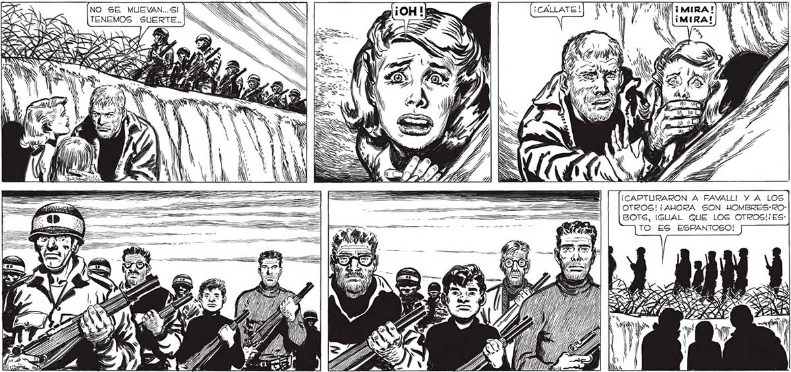

350 NO SE MUEVAN... SI TENEMOS SUERTE... | ¡CAPTURARON A FAVALLI! Y A LOS OTROS! ¡AHORA SON HOMBRES-ROBOTS, IGUAL QUE LOS OTROS! ES: TO ES ESPANTOSO! / S Ni SAS E eZ ANI 7 z IN past 4 Pl / ES) IT ea MÁS LH NA 122 ... MOSCA... FRANCO... CAPTURADOS... CONVERTIDOS EN ÓN] HOMBRES -ROBOTS... Y TODO NXE| POR DEJARNOS ESCAPAR A NOSOTROG... NS > Ny a y hi E, SÍ..ESTO ES ESPANTOSO... LO / [MAS ESPANTOSO QUE PUDO 4 Los ví PASAR, COMO EN UNA PESADILLA. ERAN HOMBRES... Y HABÍAN DEJADO DE SERLO. ERAN HOMBRES-ROBOTS. CADA LINO DE ELLOS EMPUÑABA EL FUSIL, QUE A LA VEZ ERA EL TELEDIRECTOR.. El TELEDIRECTOR QUE LOS CONVERTÍA EN ALTOMATAS, MANEJADOS POR CONTROL REMOTO... y ' hi ps pc . e 4
